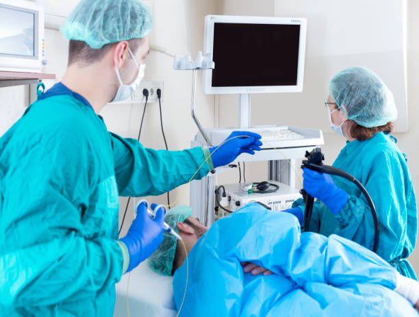

ENDOSCOPIA DIGESTIVA
Una endoscopia es, en general, la exploración de cualquier parte del organismo mediante instrumentos que están provistos de un sistema de iluminación y una cámara. El término no sólo comprende el tubo digestivo, sino también el urinario, genital femenino, abdomen, etc., aunque la más extendida sea la Endoscopia digestiva.Básicamente existen dos técnicas dentro de la Endoscopia digestiva: la Endoscopia alta o gastro esofago duodenoscopia y la endoscopia baja o Colonoscopia. Debido a que el endoscopio en este caso esta conectado a una camara de alta resolucion y las imagenes se proyectan en una pantalla o monitor hablamos entonces de video endoscopia digestiva alta o video colonoscopia.